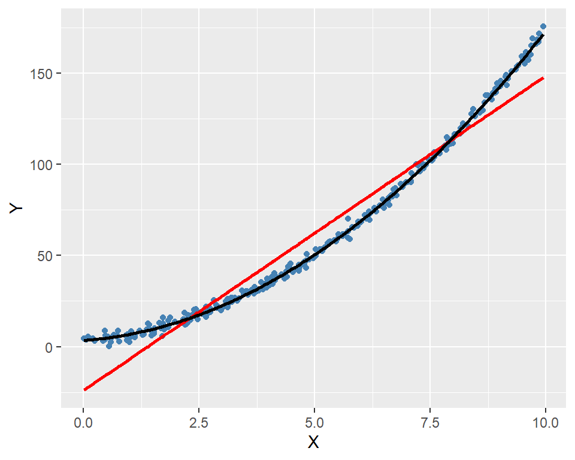
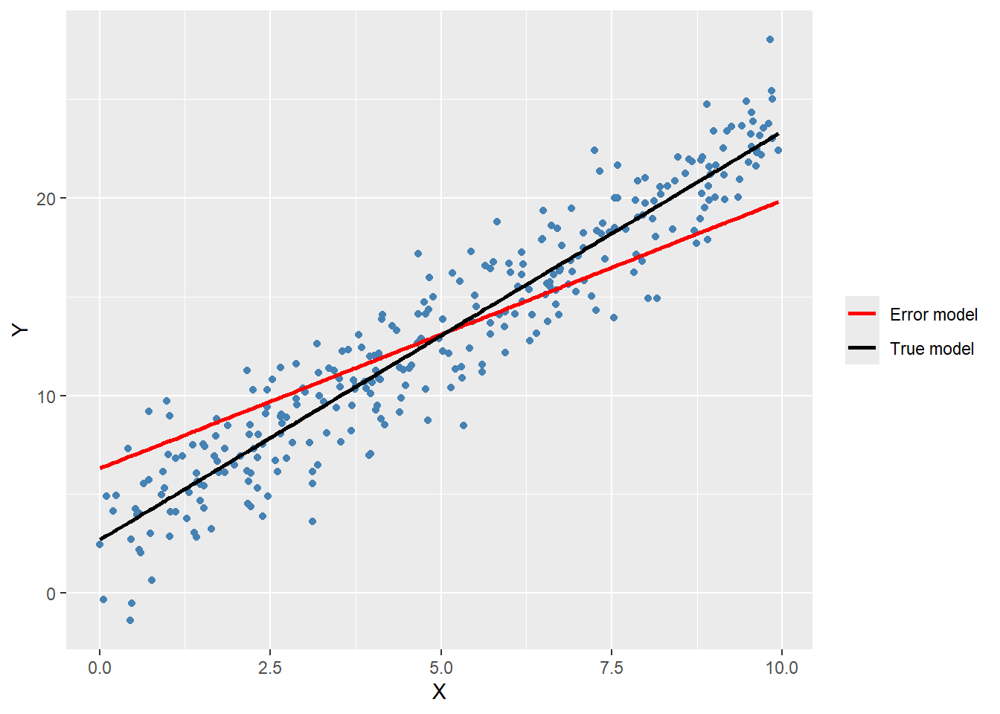
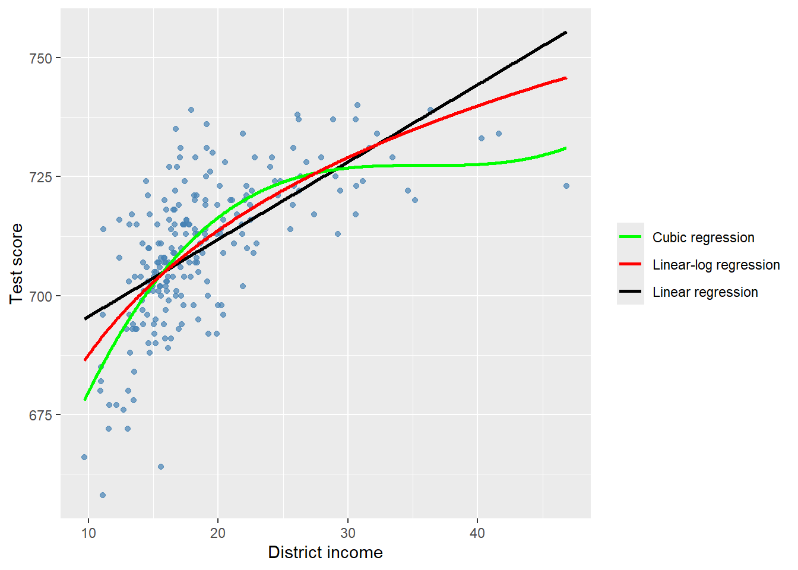

18 Assessing Studies Based on Multiple Regression
18.1 Internal and external validity
We use a framework based on internal validity and external validity to study whether a statistical model is useful for causal inference. To introduce these concepts, we first define what we mean by the population studied, the population of interest, and the setting of the study. The population studied consists of the entities from which the sample is drawn. The population of interest is the population to which the study results are intended to be generalized. The setting of the study refers to the environment in which the study is conducted. Thus, the setting encompasses institutional, legal, physical, and social conditions that may affect the study’s results.
Definition 18.1 (Internal and external validity) A study has internal validity if its results for causal effects are valid for the population and setting studied. A study has external validity if its results can be generalized to the population of interest.
We use these concepts to assess the strengths and limitations of multiple regression studies in estimating the causal effect of a variable of interest on the dependent variable.
18.2 Threats to internal validity of multiple regression analysis
There are two key requirements for the internal validity of a multiple regression analysis. First, the estimator used to estimate the causal effect must be unbiased and consistent. Second, the hypothesis tests and confidence intervals constructed for the causal effect must be valid. The following are common threats to internal validity of a multiple regression analysis:
- Omitted variable bias,
- Functional form misspecification,
- Errors in variables bias,
- Missing data and sample selection bias,
- Simultaneous causality bias.
All five threats cause the variable of interest to be correlated with the error term, violating the zero conditional mean assumption (or the conditional mean independence assumption).
18.2.1 Omitted variable bias
An omitted variable is a variable that affects the dependent variable \(Y\) (i.e., is part of the error term) and is correlated with our variable of interest \(X\). The bias resulting from an omitted variable is referred to as omitted variable bias. Since omitted variable bias violates the zero-conditional mean assumption, the OLS estimator becomes biased and inconsistent.
Solution when the omitted variable is observed or control variables are available: In this case, the omitted variable can be included in the regression model to eliminate omitted variable bias. This approach is feasible if the omitted variable is observed and measurable. If the omitted variable is not available, we must instead rely on control variables and try to achieve the conditional mean independence assumption for the variable of interest. If the control variables are effective, then including them in the model can also address the omitted variable bias.
It is important to keep in mind that adding a variable to the model involves a trade-off between bias and variance. On the one hand, adding a variable can reduce bias; on the other hand, it can increase the variance of the estimator. Stock and Watson (2020) suggests a four-step process for deciding whether to include a variable or a set of variables in the model:
We first identify the variable of interest in the model. For example, in the test score example, the variable of interest is the student-teacher ratio.
We then identify potential omitted variables that are correlated with the variable of interest. Using economic theory and expert knowledge, we determine plausible omitted variables as well as some questionable variables. Finally, we formulate a base specification that includes the variable of interest and plausible omitted variables.
Next, we estimate our base specification and examine whether including questionable variables changes the coefficient of the variable of interest. If the coefficient of a questionable variable is statistically significant and/or the coefficient of the variable of interest changes substantially, the questionable variable should be retained in the model.
Finally, we should provide full disclosure of the model selection process. This step is crucial for maintaining the transparency and credibility of the research.
Solutions to omitted variable bias when adequate control variables are not available: If the conditional mean independence assumption for the variable of interest is not satisfied-that is, when adequate control variables are unavailable-alternative estimation methods can be used to address omitted variable bias. These methods include panel data models, instrumental variable techniques, randomized controlled experiments, and quasi-experimental approaches. We introduce panel data methods in Chapter 19, instrumental variable methods in Chapter 21, and experimental and quasi-experimental methods in Chapter 22.
18.2.2 Functional form misspecification
This type of misspecification arises when the estimated regression model does not match the population regression function. Assume that the true relationship (i.e., the population regression function) between the dependent variable and the variable of interest is nonlinear. If we specify a linear relationship between the variable of interest and the dependent variable, then we are committing a functional form misspecification. Such misspecification can lead to biased and inconsistent estimators.
In the following example, we illustrate the effect of functional form misspecification on the OLS estimator. We simulate data from the following quadratic model: \(Y_i=\beta_0+\beta_1X_i+\beta_2X^2_i+u_i\), where \(X_i\sim\text{Uniform}(0,10)\), \((\beta_0,\beta_1,\beta_2)^{'}=(3,2,1.5)^{'}\), and \(u_i\sim N(0,4)\). We then estimate two models: the misspecified linear model \(Y_i=\beta_0+\beta_1X_{i}+u_i\) and the correctly specified quadratic model \(Y_i=\beta_0+\beta_1X_i+\beta_2X^2_i+u_i\).
# Simulate data
set.seed(123)
n <- 300
X <- runif(n, min = 0, max = 10)
Y <- 3 + 2 * X + 1.5 * X^2 + rnorm(n, mean = 0, sd = 2)
data <- data.frame(X = X, Y = Y)
# Estimate linear model
linear_model <- lm(Y ~ X, data = data)
# Estimate quadratic (nonlinear) model
nonlinear_model <- lm(Y ~ X + I(X^2), data = data)Figure 18.1 shows the scatterplot of data along with the line plots of predicted values. The figure shows that the nonlinear model accurately captures the quadratic relationship between \(Y\) and \(X\). The estimation results in the first column of Table 18.1 indicate that the OLS estimator reports a large bias for the coefficient of \(X\) under the linear specification. In contrast, the OLS estimator reports almost no bias under the quadratic specification, as shown in the second column of Table 18.1.
# Prepare data for fitted lines
plot_data <- data.frame(
X = X,
Y = Y,
linear_fit = fitted(linear_model),
nonlinear_fit = fitted(nonlinear_model)
)
ggplot(plot_data, aes(x = X, y = Y)) +
geom_point(color = "steelblue", size = 1.5) +
geom_line(
aes(y = linear_fit),
color = "red",
linewidth = 1
) +
geom_line(
aes(y = nonlinear_fit),
color = "black",
linewidth = 1
) +
labs(
x = expression(X),
y = expression(Y)
) +
theme(
legend.position = "none"
)
# Present linear_model and nonlinear_model results in a table
modelsummary(
list(
"Linear Model" = linear_model,
"Nonlinear Model" = nonlinear_model
),
stars = TRUE,
fmt = 3,
gof_omit = "AIC|BIC|Log.Lik"
)| Linear Model | Nonlinear Model | |
|---|---|---|
| (Intercept) | -23.940*** | 3.454*** |
| (1.307) | (0.371) | |
| X | 17.252*** | 1.817*** |
| (0.228) | (0.167) | |
| I(X^2) | 1.515*** | |
| (0.016) | ||
| Num.Obs. | 300 | 300 |
| R2 | 0.950 | 0.998 |
| R2 Adj. | 0.950 | 0.998 |
| F | 5716.370 | 94011.145 |
| RMSE | 11.04 | 1.97 |
| + p < 0.1, * p < 0.05, ** p < 0.01, *** p < 0.001 | ||
Solution to Functional Form Misspecification: When the dependent variable is continuous, functional form misspecification can be addressed using polynomial and logarithmic transformations, as discussed in Chapter 17. When the dependent variable is binary, we can instead use nonlinear models such as the probit and logit models discussed in Chapter 20.
18.2.3 Measurement error and errors in variables bias
Measurement error occurs when the observed value of a variable differs from its true value. It can arise from various sources, including data entry errors, rounding, recollection errors in surveys, ambiguous survey questions, or intentionally false responses in surveys. Measurement error can result in biased and inconsistent estimators.
To illustrate the effect of measurement error on the OLS estimator, we consider the following model with one regressor: \(Y_i=\beta_0+\beta_1X_i+u_i\), where \(\E(u_i|X_i)=0\). We assume that \(X_i\) is the unobserved true value and \(\tilde{X}_i\) is its mismeasured version, i.e., the observed regressor. Then, \[ \begin{align} Y_i &= \beta_0+\beta_1X_i+u_i=\beta_0+\beta_1\tilde{X}_i+(\beta_1(X_i-\tilde{X}_i)+u_i)\\ &=\beta_0+\beta_1\tilde{X}_i+\tilde{u}_i, \end{align} \] where \(\tilde{u}_i=(\beta_1(X_i-\tilde{X}_i)+u_i)\). Since we only observe \(\tilde{X}_i\), we will estimate the following regression: \[ \begin{align} Y_i = \beta_0+\beta_1\tilde{X}_i+\tilde{u}_i. \end{align} \tag{18.1}\]
Note that the regression model written in terms of \(\tilde{X}_i\) has the error term \(\tilde{u}_i\) that contains the measurement error. In Equation 18.1, we can derive \(\text{cov}(\tilde{X}_i,\tilde{u}_i)\) as follows: \[ \begin{align} \text{cov}(\tilde{X}_i,\tilde{u}_i)&=\text{cov}(\tilde{X}_i,\beta_1(X_i-\tilde{X}_i)+u_i)\\ &=\beta_1\text{cov}(\tilde{X}_i,(X_i-\tilde{X}_i))+\text{cov}(\tilde{X}_i, u_i). \end{align} \tag{18.2}\]
It is often plausible that \(\text{cov}(\tilde{X}_i, u_i)=0\). However, \(\text{cov}(\tilde{X}_i,(X_i-\tilde{X}_i))\ne0\) typically holds. Thus, our estimation equation in Equation 18.1 does not satisfy the zero-conditional mean assumption. Consequently, the OLS estimator of \(\beta_1\) is biased and inconsistent when \(\text{cov}(\tilde{X}_i,(X_i-\tilde{X}_i))\ne0\).
To get more insight, we assume two measurement error models: (i) the classical measurement error model and (ii) the best guess model. In the case of the classical measurement error model, we assume the following relationship between the true value \(X_i\) and the observed value \(\tilde{X}_i\): \[ \begin{align} \tilde{X}_i = X_i+v_i, \end{align} \] where \(v_i\) is an error term with \(\E(v_i)=0\), \(\text{var}(v_i)=\sigma^2_v\), \(\text{corr}(X_i, v_i) = 0\), and \(\text{corr}(u_i, v_i) = 0\). Thus, we have
- \(\text{var}(\tilde{X}_i) = \text{var}(X_i+v_i)=\sigma^2_X+\sigma^2_v\),
- \(\text{cov}(\tilde{X}_i,(X_i-\tilde{X}_i)) = \text{cov}\left(X_i+v_i,-v_i\right)=-\sigma^2_v\), and
- \(\text{cov}(\tilde{X}_i, u_i) = \text{cov}(X_i+v_i, u_i)=\text{cov}(X_i, u_i)+\text{cov}(v_i, u_i)=0\).
Then, using Equation 18.2, we obtain \[ \begin{align} \text{cov}(\tilde{X}_i,\tilde{u}_i)=\beta_1\text{cov}(\tilde{X}_i,(X_i-\tilde{X}_i))+\text{cov}(\tilde{X}_i, u_i)=-\beta_1\sigma^2_v. \end{align} \]
Recall that we derived \(\hat{\beta}_1\xrightarrow{p}\beta_1+\frac{\sigma_{Xu}}{\sigma^2_X}\) in the context of \(Y_i=\beta_0+\beta_1X_i+u_i\). Thus, in the context of \(Y_i=\beta_0+\beta_1\tilde{X}_i+\tilde{u}_i\), this results can be stated as \[ \begin{align} \hat{\beta}_1\xrightarrow{p}\beta_1+\frac{\sigma_{\tilde{X}\tilde{u}}}{\sigma^2_{\tilde{X}}}=\beta_1-\frac{\beta_1\sigma^2_v}{\sigma^2_X+\sigma^2_v}=\left(\frac{\sigma^2_X}{\sigma^2_X+\sigma^2_v}\right)\beta_1. \end{align} \tag{18.3}\]
Since \(\left(\frac{\sigma^2_X}{\sigma^2_X+\sigma^2_v}\right)<1\), the OLS estimator \(\hat{\beta}_1\) is biased towards zero even when the sample size is large. In extreme case, where \(\sigma^2_v\rightarrow\infty\), the OLS estimator \(\hat{\beta}_1\) converges to zero. Also note when \(\sigma^2_v=0\), the OLS estimator \(\hat{\beta}_1\) is unbiased and consistent.
In the following code chunk, we use the simulated data to illustrate the classical measurement error model. We assume that \(\tilde{X}_i=X_i+v_i\), where \(X_i\sim\text{Uniform}(0,10)\) and \(v_i\sim N(0,4)\). We generate \(Y_i=\beta_0+\beta_1X_i+u_i\), where \(\beta_0=3\), \(\beta_1=2\), and \(u_i\sim N(0,4)\). Then, we estimate the error model \(Y_i=\beta_0+\beta_1\tilde{X}_i+\tilde{u}_i\) and the true model \(Y_i=\beta_0+\beta_1X_i+u_i\).
# Simulate data
set.seed(123)
n <- 300
X <- runif(n, min = 0, max = 10)
v <- rnorm(n, mean = 0, sd = 2)
X_tilde <- X + v
Y <- 3 + 2 * X + rnorm(n, mean = 0, sd = 2)
data <- data.frame(
X = X,
X_tilde = X_tilde,
Y = Y
)
# Estimate OLS model with measurement error
error_model <- lm(Y ~ X_tilde, data = data)
# Estimate true model
true_model <- lm(Y ~ X, data = data)# Present ols_model and true_model results in a table
modelsummary(
list(
"Error model" = error_model,
"True model" = true_model
),
stars = TRUE,
fmt = 3,
gof_omit = "AIC|BIC|Log.Lik"
)| Error model | True model | |
|---|---|---|
| (Intercept) | 6.078*** | 2.680*** |
| (0.418) | (0.235) | |
| X_tilde | 1.378*** | |
| (0.069) | ||
| X | 2.071*** | |
| (0.041) | ||
| Num.Obs. | 300 | 300 |
| R2 | 0.573 | 0.895 |
| R2 Adj. | 0.571 | 0.895 |
| F | 399.354 | 2542.577 |
| RMSE | 4.01 | 1.99 |
| + p < 0.1, * p < 0.05, ** p < 0.01, *** p < 0.001 | ||
The estimation results are presented in Table 18.2. The results in the first column indicate that the OLS estimator introduces a significant bias in \(\beta_1\). In contrast, the OLS estimator reports only a small bias in the second column. In Figure 18.2, we plot the predicted values as line plots alongside the scatterplot of the data. The red line represents the fitted line based on the error model, while the black line represents the fitted line based on the true model. The figure shows that the predicted values based on the error model differ significantly from those based on the true model.
# Create plotting data
plot_data <- data.frame(
X = X,
Y = Y
)
# Manually specified error-model coefficients
error_intercept <- 6.306
error_slope <- 1.358
# True model fitted values
plot_data$true_fit <- fitted(true_model)
# Error model fitted line evaluated at X
plot_data$error_fit <- error_intercept + error_slope * plot_data$X
ggplot(plot_data, aes(x = X, y = Y)) +
geom_point(color = "steelblue", size = 1.5) +
geom_line(aes(y = error_fit, color = "Error model"),
linewidth = 1) +
geom_line(aes(y = true_fit, color = "True model"),
linewidth = 1) +
scale_color_manual(values = c("Error model" = "red",
"True model" = "black")) +
labs(
x = expression(X),
y = expression(Y),
color = NULL
)
Note that we can use \(\hat{\beta}_1\xrightarrow{p}\left(\frac{\sigma^2_X}{\sigma^2_X+\sigma^2_v}\right)\beta_1\) to construct a bias corrected estimator of \(\beta_1\), which is given by \(\hat{\beta}^{bc}_1=\hat{\beta}_1\left(\sigma^2_X+\sigma^2_v\right)/\sigma^2_X\). Using our simulated data and the estimation result in the first column of Table 18.2, we can get an estimate of \(\hat{\beta}^{bc}_1\) as \[ \begin{align} \hat{\beta}^{bc}_1=\hat{\beta}_1\frac{\sigma^2_X+\sigma^2_v}{\sigma^2_X}=1.358\times\frac{10^2/12+4}{10^2/12}\approx 2.009, \end{align} \] which is very close to the true value \(\beta_1=2\).
In the best guess model, we assume that \(\tilde{X}_i\) is related to \(X_i\) through \(\tilde{X}_i = \E(X_i|W_i)\), where \(W_i\) is a variable that satisfies \(\E(u_i|W_i) = 0\). In this model, \(\text{cov}(\tilde{X}_i, (X_i - \tilde{X}_i)) = 0\) because the measurement error \((X_i - \tilde{X}_i)\) is uncorrelated with \(\tilde{X}_i\). Also, since \(\E(u_i|W_i) = 0\) and \(\tilde{X}_i\) is a function of \(W_i\), it follows that \(\text{cov}(\tilde{X}_i, u_i) = 0\). As a result, under the best guess model, we have \(\text{cov}(\tilde{X}_i, \tilde{u}_i) = 0\).
Then, under the best guess model, it follows that \(\hat{\beta}_1\xrightarrow{p}\beta_1+\frac{\sigma_{\tilde{X}\tilde{u}}}{\sigma^2_{\tilde{X}}}=\beta_1\). Thus, the OLS estimator \(\hat{\beta}_1\) is still consistent under the best guess model of measurement error. However, since \(\text{var}(\tilde{u}_i) > \text{var}(u_i)\), the variance of \(\hat{\beta}_1\) is larger than it would be without measurement error, reducing the precision of the estimator.
So far we only consider measurement error in the independent variable. However, measurement error can also occur in the dependent variable. The classical measurement error in \(Y\) does not cause bias in the OLS estimator of \(\beta_1\). To see this, assume that \(\tilde{Y}_i=Y_i+w_i\), where \(\E(w_i|X_i)=0\). Then, the estimation model becomes \(\tilde{Y}_i=\beta_0+\beta_1X_i+v_i\) with \(v_i=u_i+w_i\). Since this model satisfies the zero-conditional mean assumption \(\E(v_i|X_i)=0\), the OLS estimator of \(\beta_1\) is unbiased and consistent. Thus, in general, the measurement error in \(Y\) that satisfies the zero-conditional mean assumption does not cause bias in the OLS estimator of \(\beta_1\). However, the variance of the OLS estimator becomes larger because \(\text{var}(v_i)>\text{var}(u_i)\).
Solutions to errors-in-variables bias: The following approaches can be used to address errors-in-variables bias:
When feasible, we can obtain accurate data to avoid errors-in-variables bias. For example, we can use administrative data or data from surveys with well-designed questions to minimize measurement error in the regressors.
We can resort to the instrumental variables (IV) regression method to address errors-in-variables bias. The IV estimator is discussed in Chapter 21.
When information on the nature of measurement error is available, we can build a model of the measurement error process to correct the OLS estimator. For example, under the classical measurement error model, a bias-corrected estimator can be used to address errors-in-variables bias.
18.2.4 Missing data and sample selection bias
The effect of missing data on the OLS estimator depends on the mechanism generating the missing data. We consider three types of missing data mechanisms: (i) missing completely at random, (ii) missing data based on the value of a regressor, and (iii) missing data based on a selection process that depends on the dependent variable.
The first case does not cause the OLS estimator to be biased or inconsistent. Recall that the variance of the OLS estimator is inversely proportional to the sample size. Therefore, under this case, the OLS estimator has a relatively larger variance due to the reduced sample size.
The second case, where data is missing based on the value of a regressor, also does not cause the OLS estimator to be biased or inconsistent. For example, in our test score example, if data is missing for school districts whose student-teacher ratio is greater than 20, the OLS estimator will not be biased for districts with the student-teacher ratio less than 20. However, we cannot use our estimated model to predict the test scores of districts with the student-teacher ratio greater than 20.
Under the third case, where data is missing due to a selection process that depends on the dependent variable, the OLS estimator is biased and inconsistent. In the literature, this is called the sample selection bias. The sample selection bias occurs when the sample used for estimation is not a random sample from the population of interest. For example, if data is missing for school districts with low test scores, our sample will no longer be a random sample from the population consisting of all school districts.
Solutions to missing data and sample selection bias: The following solutions can be used to address missing data and sample selection bias:
We can resort to a design-based approach for collecting data to minimize the effect of missing data and sample selection bias. For example, through a randomized controlled experiment, we can ensure that the sample is representative of the population of interest. We discuss randomized controlled experiments in Chapter 22.
We can use sample selection models in which we specify both the selection and outcome processes. For further details on these types of models, among others, see Greene (2017) and Hansen (2022).
18.2.5 Simultaneous causality bias
In our regression models, we assume that \(X\) causes \(Y\), but if \(Y\) also causes \(X\), then simultaneous causality arises. For example, in our test score example, assume that federal government provides subsidies to school districts with low test scores. In that case, school districts can use these subsidies to hire more teachers and reduce their student-teacher ratio. Thus, we have a case of simultaneous causality because test scores affect the student-teacher ratio and the student-teacher ratio affects test scores.
The zero-conditional mean assumption does not hold under simultaneous causality. To see this, we consider the following regressions:
- \(Y_i = \beta_0 + \beta_1 X_i + u_i\),
- \(X_i = \delta_0 + \delta_1 Y_i + v_i\),
where \(u_i\) and \(v_i\) are the error terms. In the first equation, a large \(u_i\) leads to a large \(Y_i\), which implies a large \(X_i\) (if \(\delta_1 > 0\)) through the second equation. Thus, \(\cov(X_i, u_i) \neq 0\) in the first model, i.e., the zero-conditional mean assumption does not hold. As a result, the OLS estimator of \(\beta_1\) is biased and inconsistent.
Solutions to simultaneous causality bias: The following solutions can be used to address simultaneous causality bias:
When feasible, we can conduct a randomized controlled experiment. The random assignment mechanism in such experiments ensures that \(X_i\) is uncorrelated with \(u_i\). We discuss randomized controlled experiments in Chapter 22.
We can use a simultaneous equation model to estimate a complete system that captures both directions of causality. For further details on these types of models, see Greene (2017) and Hansen (2022).
We can use the instrumental variable (IV) regression to estimate the causal effect of interest (i.e., the effect of \(X\) on \(Y\)). We cover this topic in Chapter 21.
18.2.6 Inconsistency of OLS standard errors
The inconsistent standard errors invalidates hypothesis tests and confidence intervals.
The standard errors derived under the homoscedasticity assumption are inconsistent in the presence of heteroscedasticity. The solution to this problem is to use heteroscedasticity-robust standard errors.
The error terms in a regression model are often correlated across observations. This correlation can arise in models specified for time-series, spatial, and panel data. The standard errors derived under the assumption of independent and identically distributed (i.i.d.) errors are inconsistent in the presence of correlated errors. The solution to this problem is to use standard errors that are robust to both heteroskedasticity and correlation. In Chapter 19 and Chapter 25, we discuss the estimation of models with correlated errors.
18.3 Threats to external validity of multiple regression analysis
Recall that a study has external validity if its results can be generalized to the population of interest. Thus, differences between the population and setting studied and the population and setting of interest can pose threats to external validity.
The results of a study may not be generalizable if the population studied differs from the population of interest. For example, our test score example uses data from California school districts on fifth-grade students. It is clear that the results of a regression analysis based on this sample can not be generalizable to the populations of high school or college students, since these populations differ significantly.
The results of a study may not be generalizable if the setting of the study also differs from the setting of interest even if the population being studied and the population of interest are identical. For example, if the study is conducted in a specific time period, the results may not be generalizable to other time periods because of changes in the setting.
We can use our expert knowledge of the populations and settings studied, as well as those of interest, to assess the external validity of a study. Caution should be exercised when generalizing results if significant differences exist between the two.
In our test score example, the estimation results indicate that the student-teacher ratio has a statistically significant negative effect on the average test scores in school districts. For this estimation, we use data from California school districts based on standardized tests administered to fifth-grade students. Assuming for the moment that these results are internally valid, to what other populations and settings could this finding be generalized?
For example, college students and college instruction differ significantly from elementary school students and instruction. Therefore, it is implausible that the effect of reducing class sizes estimated from the California elementary school district data would generalize to colleges. On the other hand, elementary school students, curricula, and organizational structures are broadly similar throughout the United States. Thus, it is plausible that our results from the California dataset might generalize to other U.S. elementary school districts.
18.4 Internal and external validity when the regression is used for prediction
For prediction exercises, external validity is more important than internal validity. There are three key requirements for reliable prediction:
Estimation and prediction samples: The estimation sample (the training sample) and the prediction sample (the testing sample) must be drawn from the same population. This requirement ensures that the model estimated using the estimation sample applies to the prediction sample. If the two samples come from different populations, the model may fail to hold in the prediction sample.
Choice of predictors: Predictors should be selected to maximize the accuracy of out-of-sample predictions.
Estimation method: The estimation method must be suitable for handling high-dimensional data when there are many predictors. In such cases, specialized estimators can provide more accurate out-of-sample predictions than the OLS estimator. We discuss these specialized estimators in Chapter 23.
18.5 Example: Test Scores and Class Size
18.5.1 Data
In this empirical application, we use the Massachusetts dataset, which contains district-level averages for public elementary school districts in 1998. The test scores are derived from the Massachusetts Comprehensive Assessment System (MCAS), administered to all fourth graders in Massachusetts public schools in the spring of 1998. We use the student–teacher ratio (tchratio), the percentage of students receiving a subsidized lunch (lnch_pct), the percentage of students still learning English (pctel), and the average district income (percap) as our main variables. The first three variables represent averages for each elementary school district over the 1997–1998 school year. For the average district income, the 1990 U.S. Census data is used. Below, we list some selected variables from the dataset:
-
code: District code (numerical) -
municipa: Municipality (name) -
district: District name -
totsc4: Overall 4th-grade test score (math + English + science) -
tchratio: Student–teacher ratio -
lnch_pct: Percentage of students receiving a subsidized lunch -
percap: Per-capita income -
pctel: Percentage of students still learning English
The following code chunk imports the data and displays the column names.
# Import data
mcas <- read_excel("data/mcas.xlsx")
# Column names
colnames(mcas) [1] "code" "municipa" "district" "regday" "specneed" "bilingua"
[7] "occupday" "tot_day" "s_p_c" "spec_ed" "lnch_pct" "tchratio"
[13] "percap" "totsc4" "totsc8" "avgsalry" "pctel" Previously, we used data from California school districts to study the relationship between test scores and class size. It will be useful to compare the Massachusetts dataset with the California dataset. In Table 18.3, we present descriptive statistics for selected variables from the Massachusetts and California datasets. For Massachusetts, the average test score is 709.83, the average student–teacher ratio is 17.34, the average percentage of English learners is \(1.12\%\), the average percentage of students receiving subsidized lunch is \(15.32\%\), and the average per-capita income is $18,750. For California, the corresponding averages are 654.16 for test scores, 19.64 for student–teacher ratio, \(15.77\%\) for English learners, \(45.71\%\) for subsidized lunch recipients, and $15,320 for per-capita income.
While Massachusetts has a higher average test score, we cannot make a direct comparison because different tests are administered in both states. Massachusetts also has lower averages for the student–teacher ratio, the percentage of subsidized lunch recipients, and the percentage of English learners. Its average per-capita income is larger than that of California.
# Import data
mcas <- read_excel("data/mcas.xlsx")
caschool <- read_excel("data/caschool.xlsx")
# Variables
mcas_vars <- c("totsc4", "tchratio", "pctel", "lnch_pct", "percap")
caschool_vars <- c("testscr", "str", "el_pct", "meal_pct", "avginc")
# Variable labels
mcas_labels <- c(
totsc4 = "Test Score",
tchratio = "Student-Teacher Ratio",
pctel = "English Learners (%)",
lnch_pct = "Free/Reduced Lunch (%)",
percap = "Average Income"
)
caschool_labels <- c(
testscr = "Test Score",
str = "Student-Teacher Ratio",
el_pct = "English Learners (%)",
meal_pct = "Free/Reduced Lunch (%)",
avginc = "Average Income"
)
# Summary statistics (replicates pandas describe)
mcas_stats <- datasummary(
totsc4 + tchratio + pctel + lnch_pct + percap ~
Mean + SD + Min + Max,
data = mcas,
fmt = "%.2f",
output = "data.frame"
) |>
rename(Variable = 1) |>
mutate(Variable = mcas_labels[Variable],
State = "Massachusetts")
caschool_stats <- datasummary(
testscr + str + el_pct + meal_pct + avginc ~
Mean + SD + Min + Max,
data = caschool,
fmt = "%.2f",
output = "data.frame"
) |>
rename(Variable = 1) |>
mutate(Variable = caschool_labels[Variable],
State = "California")
# Combine statistics
combined_stats <- bind_rows(mcas_stats, caschool_stats)
# Remove State column
df_tab <- combined_stats %>% select(-State)| Variable | Mean | SD | Min | Max |
|---|---|---|---|---|
| Panel A: California | ||||
| Test Score | 709.83 | 15.13 | 658.00 | 740.00 |
| Student-Teacher Ratio | 17.34 | 2.28 | 11.40 | 27.00 |
| English Learners (%) | 1.12 | 2.90 | 0.00 | 24.49 |
| Free/Reduced Lunch (%) | 15.32 | 15.06 | 0.40 | 76.20 |
| Average Income | 18.75 | 5.81 | 9.69 | 46.85 |
| Panel B: Massachusetts | ||||
| Test Score | 654.16 | 19.05 | 605.55 | 706.75 |
| Student-Teacher Ratio | 19.64 | 1.89 | 14.00 | 25.80 |
| English Learners (%) | 15.77 | 18.29 | 0.00 | 85.54 |
| Free/Reduced Lunch (%) | 44.71 | 27.12 | 0.00 | 100.00 |
| Average Income | 15.32 | 7.23 | 5.34 | 55.33 |
In Figure 18.3, we examine the relationship between test scores and average district income based on the Massachusetts dataset. The scatter plot shows a positive relationship, with the slope being steeper for lower income values and flatter for higher income values. To model the relationship between test scores and average district income, we consider three regression models: (i) the linear regression model, (ii) the cubic regression model, and (iii) the linear-log regression model. The fitted regression functions in Figure 18.3 indicate that the cubic regression provides a better fit compared to the linear and linear-log regressions.
# Define dependent and independent variables
x <- mcas$percap
y <- mcas$totsc4
# Linear regression
model_linear <- lm(y ~ x)
# Cubic regression
model_cubic <- lm(y ~ x + I(x^2) + I(x^3))
# Linear-log regression
model_log <- lm(y ~ log(x))
# Generate grid for fitted values
x_range <- seq(min(x, na.rm = TRUE),
max(x, na.rm = TRUE),
length.out = 500)
# Fitted values
linear_fit <- predict(model_linear,
newdata = data.frame(x = x_range))
cubic_fit <- predict(model_cubic,
newdata = data.frame(x = x_range))
log_fit <- predict(model_log,
newdata = data.frame(x = x_range))
# Combine data for plotting
plot_data <- data.frame(
x = x_range,
linear = linear_fit,
cubic = cubic_fit,
log = log_fit
)
# Plot
ggplot(mcas, aes(x = percap, y = totsc4)) +
geom_point(color = "steelblue", alpha = 0.7) +
geom_line(data = plot_data, aes(x = x, y = linear, color = "Linear regression"),
linewidth = 1) +
geom_line(data = plot_data, aes(x = x, y = cubic, color = "Cubic regression"),
linewidth = 1) +
geom_line(data = plot_data, aes(x = x, y = log, color = "Linear-log regression"),
linewidth = 1) +
scale_color_manual(values = c(
"Linear regression" = "black",
"Cubic regression" = "green",
"Linear-log regression" = "red"
)) +
labs(
x = "District income",
y = "Test score",
color = NULL
)
18.5.2 Models
Following Stock and Watson (2020), we consider six models given below. The first model includes only the student–teacher ratio as a regressor. The second model adds the percentage of English learners, the percentage of students receiving subsidized lunch, and the logarithm of per-capita income as additional regressors. The third model incorporates the third-order polynomial terms of per-capita income as regressors. The fourth model extends this by including quadratic and cubic terms for the student–teacher ratio. The fifth model introduces an interaction term between the student–teacher ratio and the percentage of English learners. Finally, the sixth model includes both the percentage of students receiving subsidized lunch and the third-order polynomial terms of per-capita income.
\[ \begin{align*} &1.\, {\tt totsc4}=\beta_0+\beta_1{\tt tchratio}+u,\\ &2.\, {\tt totsc4}=\beta_0+\beta_1{\tt tchratio}+\beta_2{\tt pctel}+\beta_3{\tt lnch\_pct}+ \beta_4\log({\tt percap})+u,\\ &3.\,{\tt totsc4}=\beta_0+\beta_1{\tt tchratio}+\beta_2{\tt pctel}+\beta_3{\tt lnch\_pct}+{\color{steelblue}\beta_4{\tt percap}}\\ &\quad\quad\quad\quad\quad{\color{steelblue}+\beta_5{\tt percap}^2+ \beta_6{\tt percap}^3}+u,\\ &4.\, {\tt totsc4}=\beta_0+\beta_1{\tt tchratio}+\beta_2{\tt tchratio}^2+\beta_3{\tt tchratio}^3+\beta_4{\tt pctel}\\ &\quad\quad\quad\quad\quad+\beta_5{\tt lnch\_pct}+{\color{steelblue}\beta_6{\tt percap}+\beta_7{\tt percap}^2+ \beta_8{\tt percap}^3}+u,\\ &5.\,{\tt totsc4}=\beta_0+\beta_1{\tt tchratio}+\beta_2{\tt HiEL}+\beta_3\left({\tt HiEL}\times{\tt tchratio}\right)\\ &\quad\quad\quad\quad\quad+\beta_4{\tt lnch\_pct}+{\color{steelblue}\beta_5{\tt percap}}+{\color{steelblue}+\beta_6{\tt percap}^2+ \beta_7{\tt percap}^3}+u,\\ &6.\,{\tt totsc4}=\beta_0+\beta_1{\tt tchratio}+\beta_2{\tt lnch\_pct}+{\color{steelblue}\beta_3{\tt percap}}\\ &\quad\quad\quad\quad\quad{\color{steelblue}+\beta_4{\tt percap}^2+ \beta_5{\tt percap}^3}+u.\\ \end{align*} \]
In the fifth model, HiEL can be considered as the discrete version of pctel, and is defined in the following way: \[
\begin{align}
\text{\tt HiEL}_i=
\begin{cases}
1\,\text{if {\tt pctel}}_i>\text{Median}({\tt pctel}),\\
0\,\text{if {\tt pctel}}_i\leq\text{Median}({\tt pctel}).
\end{cases}
\end{align}
\]
mydata <- mcas
# Create hiel indicator
mydata$hiel <- mydata$pctel > median(mydata$pctel, na.rm = TRUE)18.5.3 Estimation results
We use the following code chunk can to estimate all models. Note that we use heteroskedasticity-robust standard errors in all models.
# Model 1
r1 <- lm(totsc4 ~ tchratio, data = mydata)
# Model 2
r2 <- lm(
totsc4 ~ tchratio + pctel + lnch_pct + log(percap),
data = mydata
)
# Model 3
r3 <- lm(
totsc4 ~ tchratio + pctel + lnch_pct +
percap + I(percap^2) + I(percap^3),
data = mydata
)
# Model 4
r4 <- lm(
totsc4 ~ tchratio + I(tchratio^2) + I(tchratio^3) +
pctel + lnch_pct +
percap + I(percap^2) + I(percap^3),
data = mydata
)
# Model 5
r5 <- lm(
totsc4 ~ tchratio + hiel + hiel:tchratio +
lnch_pct + percap + I(percap^2) + I(percap^3),
data = mydata
)
# Model 6
r6 <- lm(
totsc4 ~ tchratio +
lnch_pct + percap + I(percap^2) + I(percap^3),
data = mydata
)# Print results in table form
models <- list(
"Model 1" = r1,
"Model 2" = r2,
"Model 3" = r3,
"Model 4" = r4,
"Model 5" = r5,
"Model 6" = r6
)
modelsummary(
models,
vcov = "HC1",
stars = TRUE,
fmt = 3,
gof_omit = "AIC|BIC|Log.Lik"
)| Model 1 | Model 2 | Model 3 | Model 4 | Model 5 | Model 6 | |
|---|---|---|---|---|---|---|
| (Intercept) | 739.621*** | 682.432*** | 744.025*** | 665.496*** | 759.914*** | 747.364*** |
| (8.607) | (11.497) | (21.318) | (81.332) | (23.233) | (20.278) | |
| tchratio | -1.718*** | -0.689* | -0.641* | 12.426 | -1.018** | -0.672* |
| (0.499) | (0.270) | (0.268) | (14.010) | (0.370) | (0.271) | |
| pctel | -0.411 | -0.437 | -0.434 | |||
| (0.306) | (0.303) | (0.300) | ||||
| lnch_pct | -0.521*** | -0.582*** | -0.587*** | -0.709*** | -0.653*** | |
| (0.078) | (0.097) | (0.104) | (0.091) | (0.073) | ||
| log(percap) | 16.529*** | |||||
| (3.146) | ||||||
| percap | -3.067 | -3.382 | -3.867 | -3.218 | ||
| (2.353) | (2.491) | (2.488) | (2.306) | |||
| I(percap^2) | 0.164+ | 0.174+ | 0.184* | 0.165+ | ||
| (0.085) | (0.089) | (0.090) | (0.085) | |||
| I(percap^3) | -0.002* | -0.002* | -0.002* | -0.002* | ||
| (0.001) | (0.001) | (0.001) | (0.001) | |||
| I(tchratio^2) | -0.680 | |||||
| (0.737) | ||||||
| I(tchratio^3) | 0.011 | |||||
| (0.013) | ||||||
| hielTRUE | -12.561 | |||||
| (9.793) | ||||||
| tchratio × hielTRUE | 0.799 | |||||
| (0.555) | ||||||
| Num.Obs. | 220 | 220 | 220 | 220 | 220 | 220 |
| R2 | 0.067 | 0.676 | 0.685 | 0.687 | 0.686 | 0.681 |
| R2 Adj. | 0.063 | 0.670 | 0.676 | 0.675 | 0.675 | 0.674 |
| F | 11.848 | 144.364 | 110.221 | 105.725 | 73.020 | 109.053 |
| RMSE | 14.58 | 8.59 | 8.47 | 8.45 | 8.46 | 8.52 |
| Std.Errors | HC1 | HC1 | HC1 | HC1 | HC1 | HC1 |
| + p < 0.1, * p < 0.05, ** p < 0.01, *** p < 0.001 | ||||||
The estimation results for Models 1–6 are presented in Table 18.4. We list our key findings below:
The results in the first three columns show that the estimated coefficient on
tchratiodecreases from -1.72 to -0.64 in the second column and -0.641 in the third column when we control for student and district characteristics. This suggests that the first model suffers from omitted variable bias.The results in the second and third columns indicate that the class size effect is statistically significant at the 5% level after controlling for student and district characteristics. Comparing \(\bar{R}^2\) values in Models 2 and 3, the cubic specification provides a better fit than the logarithmic specification.
In Model 3, we can use the \(F\)-statistic to test \(H_0:\beta_5=\beta_6=0\) versus \(H_1\): At least one coefficient is non zero. The \(F\)-statistic given below is 7.74 with a p-value of 0.0006. Thus, we reject the null hypothesis.
# Test H0: beta_percap^2 = beta_percap^3 = 0 (Model 3)
linearHypothesis(
r3,
c("I(percap^2) = 0", "I(percap^3) = 0"),
vcov = vcovHC(r3, type = "HC1")
)
Linear hypothesis test:
I(percap^2) = 0
I(percap^3) = 0
Model 1: restricted model
Model 2: totsc4 ~ tchratio + pctel + lnch_pct + percap + I(percap^2) +
I(percap^3)
Note: Coefficient covariance matrix supplied.
Res.Df Df F Pr(>F)
1 215
2 213 2 7.7448 0.0005664 ***
---
Signif. codes: 0 '***' 0.001 '**' 0.01 '*' 0.05 '.' 0.1 ' ' 1- The results for Model 4 show that there is no statistically significant evidence of a nonlinear relationship between test scores and the student–teacher ratio. The \(F\)-statistic for \(H_0:\beta_2=\beta_3=0\) can be obtained using the code chunk given below. The \(F\)-statistic is 0.45 with a \(p\)-value of 0.640. Thus, we fail to reject the null hypothesis.
# Test H0: beta_tchratio^2 = beta_tchratio^3 = 0 (Model 4)
linearHypothesis(
r4,
c("I(tchratio^2) = 0",
"I(tchratio^3) = 0"),
vcov = vcovHC(r4, type = "HC1")
)
Linear hypothesis test:
I(tchratio^2) = 0
I(tchratio^3) = 0
Model 1: restricted model
Model 2: totsc4 ~ tchratio + I(tchratio^2) + I(tchratio^3) + pctel + lnch_pct +
percap + I(percap^2) + I(percap^3)
Note: Coefficient covariance matrix supplied.
Res.Df Df F Pr(>F)
1 213
2 211 2 0.4463 0.6406- The results for Model 5 show that the estimated coefficents for both
HiELandHiELxtchratioare statistically insignifcant at the 5% significance level. The \(F\)-statistic for \(H_0:\beta_5=\beta_6=0\) can be obtained using the following code chunk. The \(F\)-statistic is 1.58 with a \(p\)-value of 0.207. Thus, we fail to reject the null hypothesis and conclude that the percentage of English learners does not have a statistically significant effect on test scores after controlling for the student–teacher ratio and other variables.
# Test H0: beta_hiel = beta_hiel:tchratio = 0 (Model 5)
linearHypothesis(
r5,
c("hielTRUE = 0",
"tchratio:hielTRUE = 0"),
vcov = vcovHC(r5, type = "HC1")
)
Linear hypothesis test:
hielTRUE = 0
tchratio:hielTRUE = 0
Model 1: restricted model
Model 2: totsc4 ~ tchratio + hiel + hiel:tchratio + lnch_pct + percap +
I(percap^2) + I(percap^3)
Note: Coefficient covariance matrix supplied.
Res.Df Df F Pr(>F)
1 214
2 212 2 1.5835 0.2077The results for Model 6 indicate that the percentage of English learners can be omitted as a regressor.
Finally, since Models 4–6 do not produce substantially different results compared to Model 3, we select Model 3 as the most suitable specification.
18.5.4 Internal validity assessment
Omitted variable bias: We control for student characteristics such as the percentage of English learners and the percentage of students receiving subsidized lunch, as well as district characteristics such as per-capita income. If these control variables are effective for acheiving the conditional mean independence assumption, then the OLS estimator of the coefficient of the student-teacher ratio is unbiased and consistent. However, there can be some other omitted causal factors such as outside learning resources, parental involvement, and teacher quality that can affect test scores. If these omitted variables are also correlated with the student-teacher ratio, then the OLS estimator of the student-teacher ratio will be biased and inconsistent.
Functional form misspecification: We consider several different functional forms, including logarithmic and polynomial specifications. Our findings on the estimated coefficient for the student-teacher ratio are unlikely to be sensitive to the choice of nonlinear regression specifications.
Errors in variables bias: The data are administrative, so it is unlikely that there are substantial reporting or typographical errors. However, the student-teacher ratio is an average for the district, which may not accurately reflect the actual student-teacher ratio in each classroom. The district income is based on data from the 1990 Census, while the other data pertain to 1998. If the economic composition of the district changed substantially over the 1990s, this would result in an imprecise measure of the actual average district income.
Missing data and sample selection bias: The sample data cover all elementary public school districts in California and Massachusetts, and there are no missing values. Therefore, this threat is not a concern in our analysis.
Simultaneous causality bias: This threat could arise if the student-teacher ratio is influenced by test scores. For instance, school funding equalization based on test scores or policies that allocate resources according to test scores could lead to simultaneous causality. However, such policies were not in place in California or Massachusetts during the periods covered by these samples. Therefore, Stock and Watson (2020) conclude that simultaneous causality bias is arguably not a significant concern.
Inconsistency of OLS standard errors: We use heteroskedasticity-robust standard errors in all models to address this issue.
18.5.5 External validity assessment
Our results, presented in Table 18.4, suggest conclusions similar to those obtained in Chapter 17 based on the California dataset. Based on this observation, Stock and Watson (2020) conclude that the multiple linear regression models are externally valid and therefore the results can be generalized to other elementary school districts in the United States.